4. 残高をチャージする
スマホ決済アプリの残高が足りない場合には、「チャージ」を行って、アプリで使える金額を増やします。
たとえば、残高が800円のときに400円をチャージすると、操作後の残高は1,200円になります。
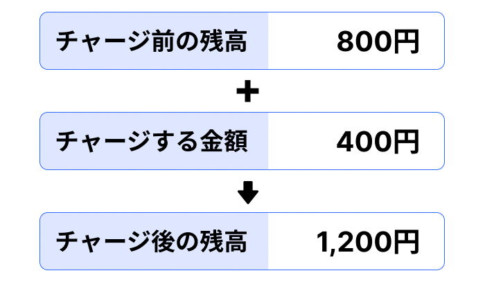
この教材の架空アプリでは、ホーム画面から「チャージ」を選びます。
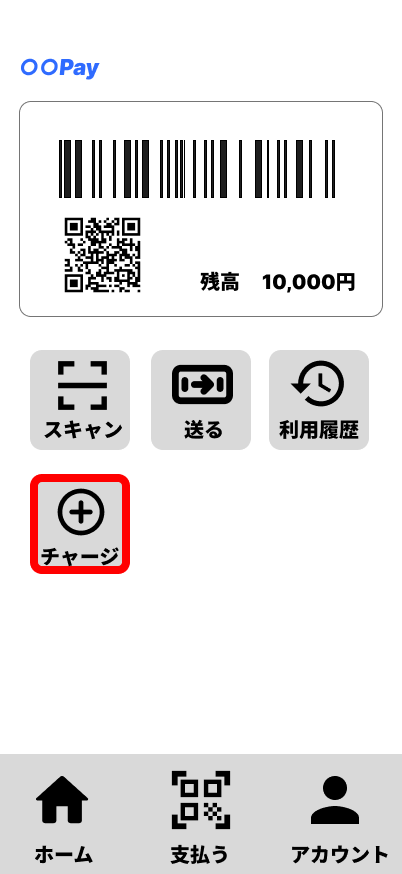
「チャージ」を選ぶと、チャージ方法を選択する画面が表示されます。
チャージにはいくつかの方法があります。この教材では、登録した銀行口座を利用する方法と、ATMを利用する方法を中心に説明します。
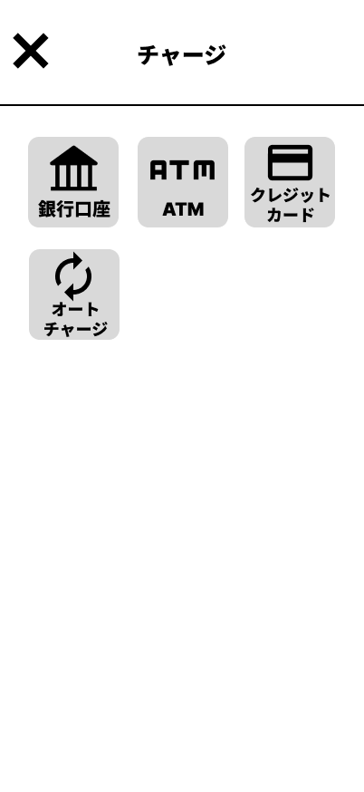
4.1 銀行口座を利用してチャージする
あらかじめスマホ決済アプリに銀行口座を登録しておくと、その銀行口座から金額を指定して残高を増やすことができます。
この教材の架空アプリでは、チャージ方法を選ぶ画面から「銀行口座」を選びます。
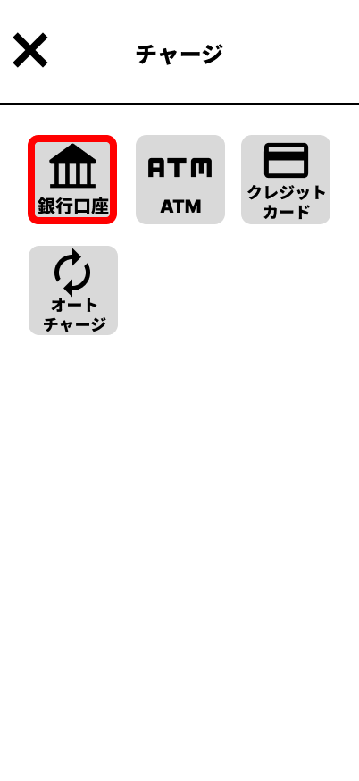
銀行口座チャージの画面では、使用する銀行口座を確認し、チャージしたい金額を入力します。
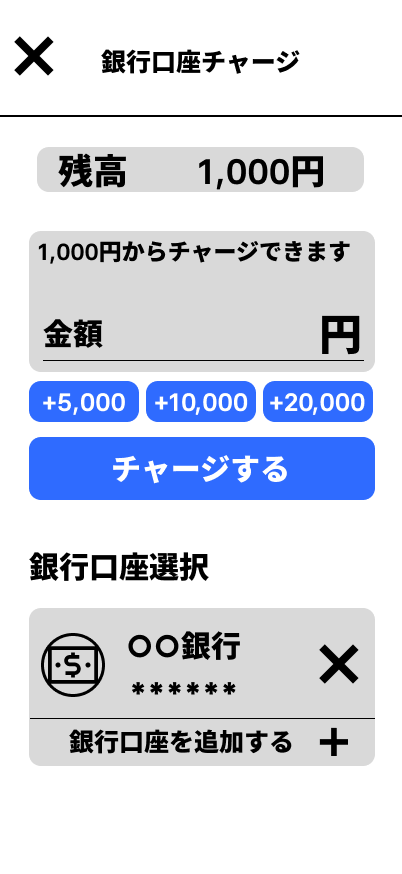
たとえば、1,000円をチャージする場合には、金額の欄に1,000円を入力します。
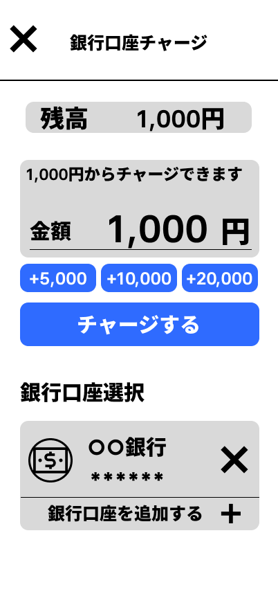
入力した内容を確認して「チャージする」を選ぶと、チャージが行われます。
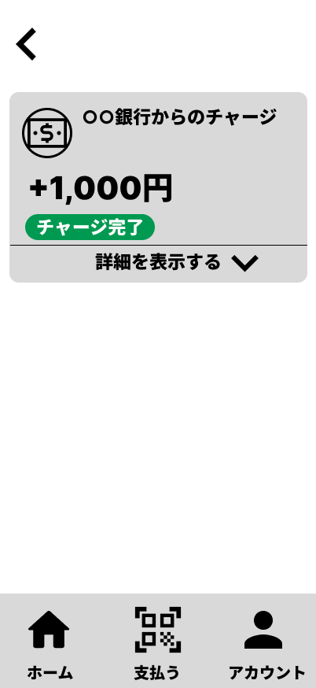
操作が完了すると、指定した金額がスマホ決済アプリの残高に加わります。
4.2 ATMを利用してチャージする
ATMに現金を入れて、スマホ決済アプリの残高を増やす方法もあります。
ATMを利用する場合には、スマートフォンだけでなくATM側でも操作を行います。
まず、ATMでスマートフォンを使ったチャージを選びます。その後、スマホ決済アプリでチャージ方法として「ATM」を選びます。
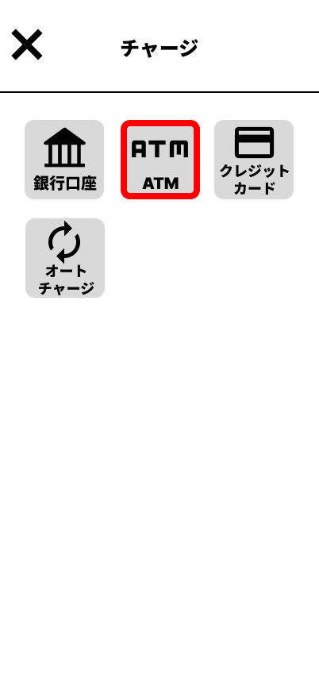
ATMチャージを選ぶと、ATMに表示されているQRコードを読み取るための画面が表示されます。
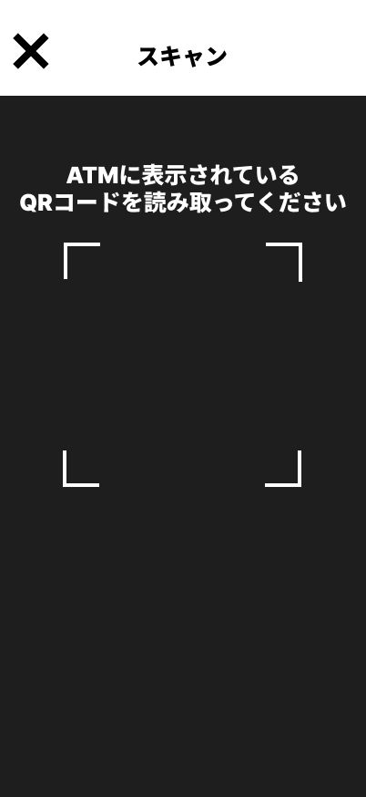
ATMの画面に表示されているQRコードをスマートフォンで読み取ります。
QRコードを読み取ると、スマートフォンの画面に企業番号が表示されます。
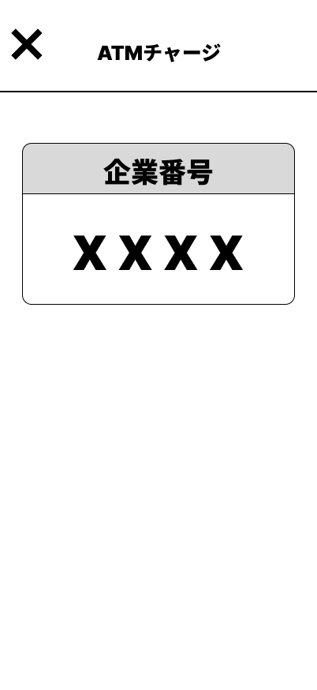
次に、スマートフォンに表示された企業番号をATMへ入力します。
その後、ATMにチャージしたい金額の現金を入れます。ATMに表示された入金額を確認し、内容に問題がなければ操作を進めます。
ATMとスマートフォンで行う操作の流れは、次のとおりです。
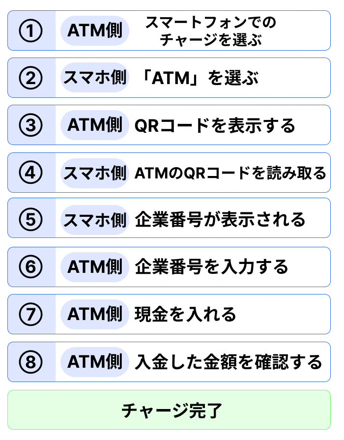
すべての操作が完了すると、チャージ完了の画面が表示されます。
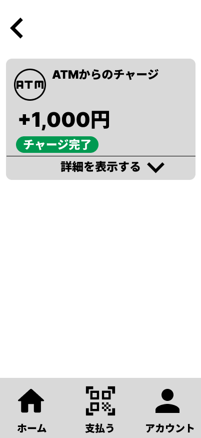
チャージが完了すると、ATMに入れた金額がスマホ決済アプリの残高に加わります。
また、チャージした内容は、あとから利用履歴で確認できます。
ポイント
銀行口座やATMを使ってチャージすると、その金額がスマホ決済アプリの残高に加わります。